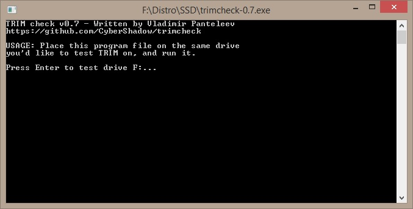
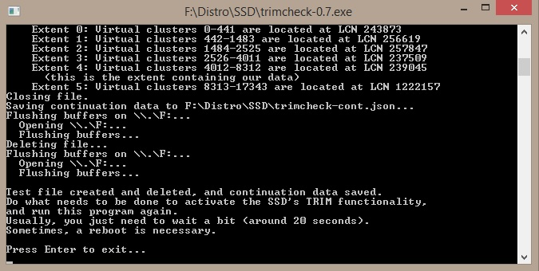
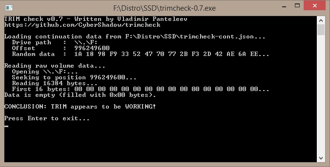

Интересная утилита на которую я наткнулся на просторах сети - для проверки работоспособности технологии TRIM в операционных системах семейства Windows.
Называется Trimchecker, предназначена для проверки работоспособности команды TRIM в среде Windows. Написана утилита нашим соотечественником. Давайте посмотрим как с ней работать.
Качаем утилиту отсюда.
После запуска exe файла открывается окно:
Необходимо расположить exe файл программы непосредственно на том диске, который мы хотим проверить. Если у вас SSD диск разбит на два логических диска(как у меня), то достаточно скопировать программу на любой из дисков. В случае, если в системе имеется несколько физических SSD накопителей, то запускать утилиту нужно на каждом из них. После того, как вы определились с диском, можно приступать к тестированию. Для этого просто нажмите клавишу Enter.
По завершению выполнения увидим следующее сообщение:
Программа сообщает, что для продолжения необходимо снова нажать клавишу Enter и затем выждав порядка 20 секунд, запустить программу еще раз.
Ждем указанное время, и запускаем программу:
Видим сообщение "TRIM appears to be WORKING!". Значит все работает хорошо)
Если вкратце коснуться алгоритма работы, то он следующий: программа записывает на диск файлы и запоминает их расположение на диске(не путь к файлам, а именно физическое расположение на носителе). Затем эти файлы удаляются(на файлах ставится пометка на удаление, но сами они остаются на прежнем месте), программа закрывается и мы ждем некоторое время. В этот промежуток времени операционная система отправляет команду TRIM контроллеру SSD диска, который после ее получения проводит поиск файлов, помеченных на удаление и производит их аннигиляцию). Когда мы повторно производим запуск утилиты, то происходит проверка тех мест расположения файлов, которые были отмечены при первом запуске. Если файлов по тем координатам больше нет, значит они были успешно удалены при помощи команды TRIM.